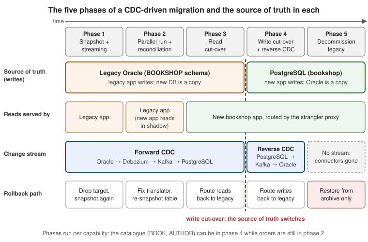

Migration Patterns with CDC
|
This content was generated with the assistance of AI and should be verified against the official documentation before being relied on in production. |
Migration Strategies concludes that log-based change data capture is the right backbone for a migration in which the legacy database keeps running. This page describes how to use that backbone over the lifetime of a migration. A CDC-driven migration is not one switch but a sequence of phases, each with a clear source of truth, a clear direction of the change stream, an exit criterion and a rollback path. The page then shows how the architecture patterns this repository already documents (the strangler fig, the anti-corruption layer, expand/contract, CQRS and the transactional outbox) look when the thing that connects them is a stream of Debezium change events.
The patterns themselves are explained elsewhere, and this page links to them rather than repeating them: Migration Overview for the strangler fig, the legacy migration path for the anti-corruption layer and the strangler proxy, CQRS for read models, and Transactional Outbox for the outbox. What is new here is the data-layer view: which database owns which table in each phase, and what the Debezium pipeline does at each step.
Checked on 2026-11-09 against Debezium 3.7.1.Final, Oracle AI Database 26ai Free (image gvenzl/oracle-free:23.26.3,
PDB FREEPDB1), PostgreSQL 18, Spring Boot
4.1 and Java 21. The Java classes on this page were compiled with javac --release 21. The connector configurations and
SQL were derived from the official documentation listed under References and were not run.
The five phases at a glance
Every CDC-driven migration in this section goes through the same five phases. The figure shows them on a timeline, with the system that owns the writes (the source of truth), the system that serves reads, the direction of the change stream, and the way back if the phase fails.

| Phase | Source of truth (writes) | Reads served by | Change stream | Exit criterion | Rollback |
|---|---|---|---|---|---|
1. Snapshot + streaming |
Legacy Oracle |
Legacy application |
Oracle → Kafka → PostgreSQL |
Snapshot finished, streaming lag stable at seconds |
Drop the target tables and snapshot again |
2. Parallel run + reconciliation |
Legacy Oracle |
Legacy application (the new one reads in shadow) |
Oracle → Kafka → PostgreSQL |
Reconciliation clean for a full business cycle |
Fix the translator, re-snapshot the affected table |
3. Read cut-over |
Legacy Oracle |
New application (through the strangler proxy) |
Oracle → Kafka → PostgreSQL |
Read traffic at 100% on the new application, no stale-read complaints |
Route reads back to the legacy application |
4. Write cut-over + reverse CDC |
PostgreSQL |
New application |
PostgreSQL → Kafka → Oracle |
No legacy reader or writer left for the capability |
Route writes back to the legacy application, re-enable forward CDC |
5. Decommission |
PostgreSQL |
New application |
None |
Legacy schema archived and dropped |
Restore from the archive (expensive, by design) |
Two properties of this sequence matter more than any single phase:
-
Exactly one source of truth per table at any time. In phases 1 to 3, the legacy application is the only writer of
BOOKSHOP.BOOK, and PostgreSQL holds a copy. From phase 4, the new application is the only writer ofbook, and the legacy table holds a copy. There is never a period in which both systems accept writes to the same rows, which is what makes the change stream unambiguous and keeps loops out of the pipeline. -
Phases run per capability, not per database. The Bookshop catalogue (
BOOK,AUTHOR) moves first. It can reach phase 4 while customers are in phase 3 and orders are still in phase 2. The table that matters is therefore not "which phase is the migration in" but "which phase is each table in", and the migration plan should keep that table up to date.
The state diagram shows the same phases as states, with the rollback transitions that make each step reversible.
Phase 1: initial snapshot and streaming into the new store
What happens
The Oracle source connector bookshop-oracle-source (configured on
Migration Strategies and in
full on Oracle Connector) starts with snapshot.mode=initial. It reads
the current content of each captured table at one consistent system change number (SCN), emits one op=r (read) event
per row, and then streams every change committed after that SCN as op=c, op=u and op=d events. The snapshot and
the stream join without a gap and without a write freeze on the legacy database.
On the new side, two kinds of consumers apply the events:
-
Mirror tables for data that the new application uses as is. The Debezium JDBC sink
bookshop-pg-mirror-sinkwritesBOOK,AUTHORandSUPPLIER_CATALOGUE1:1 intolegacy_book,legacy_authorandlegacy_supplier_catalogue. These are staging copies that keep the legacy column names and codes. -
Translators for data that changes shape. The anti-corruption layer in the Spring Boot
bookshopapplication (consumer groupbookshop-legacy-sync) turnsBOOKchanges into rows ofbookandbook_author,CUSTOMERintocustomer, andORDERSplusORDER_LINEintopurchase_orderandorder_line. It is described below.
{
"name": "bookshop-pg-mirror-sink",
"config": {
"connector.class": "io.debezium.connector.jdbc.JdbcSinkConnector",
"tasks.max": "1",
"topics": "legacy.BOOKSHOP.BOOK,legacy.BOOKSHOP.AUTHOR,legacy.BOOKSHOP.SUPPLIER_CATALOGUE",
"connection.url": "jdbc:postgresql://postgres:5432/bookshop?stringtype=unspecified",
"connection.username": "bookshop_mirror",
"connection.password": "change-me",
"insert.mode": "upsert",
"primary.key.mode": "record_key",
"delete.enabled": "true",
"schema.evolution": "none",
"quote.identifiers": "false",
"collection.name.format": "legacy_${source.table}",
"use.time.zone": "UTC"
}
}Reference: Debezium — JDBC sink connector configuration and Debezium — JDBC sink collection.name.format
The settings that make this sink safe for a migration:
-
insert.mode=upsertwithprimary.key.mode=record_keymakes every write idempotent. When the source connector restarts and emits some events again (at-least-once delivery), the sink writes the same row twice with the same result. -
delete.enabled=trueturnsop=devents into SQL deletes. The JDBC sink requires a primary key mode ofrecord_key,record_valueorrecord_headerfor this. -
collection.name.format=legacy_${source.table}builds the target table name from thesource.tablefield of each event (BOOKbecomeslegacy_BOOK). Withquote.identifiers=false, PostgreSQL folds the unquoted name tolegacy_book. -
schema.evolution=nonemeans the sink only writes rows. Thelegacy_*mirror tables are created beforehand with explicit types (see JDBC Sink Connector), because the source sends every OracleNUMBERas a string (decimal.handling.mode=string) and the sink would otherwise create text columns.?stringtype=unspecifiedat the end of the JDBC URL lets PostgreSQL cast those strings into thebigintandnumericcolumns. For the translated tables, too, the schema is owned by Liquibase, not by the sink, as the expand/contract section explains.
Exit criterion and rollback
Phase 1 is finished when the snapshot has completed for every captured table and the streaming lag (the difference
between the event’s source.ts_ms and the time it is applied) has been stable at a few seconds for several days,
including the night when the supplier feed and the legacy batch jobs run.
Rollback is cheap because nothing depends on the new database yet. If the snapshot fails or the translator produces
wrong rows, drop the target tables, fix the cause and snapshot again. A full re-run of the initial snapshot is not
needed for a single table: an ad hoc incremental snapshot, triggered by a signal, re-reads one table in chunks while
streaming continues. Incremental & Blocking Snapshots
and Signaling & Notifications show the signal for the
BOOKSHOP.DEBEZIUM_SIGNAL table.
Large tables need care in this phase. A multi-hour initial snapshot of ORDER_LINE holds an Oracle flashback query open
and needs enough undo retention to finish. For such tables, start the connector with the large tables excluded from the
initial snapshot and add them later with an incremental snapshot, as
Initial Snapshots describes.
Phase 2: parallel run and reconciliation
What happens
The legacy application still serves all users, but the new application now runs against the replicated data in production, in shadow. It answers the same queries as the legacy application (catalogue searches, a customer’s order history), and the two answers are compared, logged and discarded. This is the parallel run technique of the legacy migration path, applied to data rather than to a single piece of logic.
Alongside the shadow reads, reconciliation compares the two databases directly: row counts per table, counts per status, sums of money columns, and hashes of individual rows for a sample of keys. A minimal pair of queries for the order status distribution looks like this.
-- Legacy Oracle (FREEPDB1, schema BOOKSHOP)
SELECT STATUS_CD, COUNT(*) AS ORDERS, SUM(TOTAL_AMT) AS TOTAL
FROM BOOKSHOP.ORDERS
WHERE ORDER_DT < TRUNC(SYSDATE)
GROUP BY STATUS_CD
ORDER BY STATUS_CD;
-- New PostgreSQL (database bookshop)
SELECT status, count(*) AS orders, sum(total) AS total
FROM purchase_order
WHERE placed_at < date_trunc('day', now())
GROUP BY status
ORDER BY status;The cut-off (before today) keeps changes that are still in flight out of the comparison. The statuses differ in name
(NW versus NEW), so the comparison maps them through the same table the translator uses.
Verification & Reconciliation turns this into a scheduled
job with per-row hashing and dashboards.
What goes wrong, and the exit criterion
Most findings in this phase are translator bugs (a CHAR(3) currency with trailing spaces, an Oracle DATE interpreted
in the wrong time zone, a status code nobody knew about) and data-type surprises, which
Data Types & Precision covers. Each finding follows the same
loop: fix the translator, deploy it, re-snapshot the affected table with an incremental snapshot, and reconcile again.
The state diagram shows this as the transition from the parallel run back to streaming.
The exit criterion is a clean reconciliation over a full business cycle: a month-end, the nightly batch, the weekly supplier feed, and any seasonal peak that the business considers typical. Rollback costs nothing, because no user has seen data from the new system yet.
Phase 3: read cut-over
What happens
The strangler proxy starts routing reads of the migrated capability to the new application: first for an internal cohort, then for a growing percentage of users, using the cohort-based routing described in Feature flags and cohort-based cut-over. Writes still go to the legacy application, so the new database is still a copy, kept current by forward CDC.
The read-your-writes problem
This phase introduces the one inconsistency that users can see. A customer changes their e-mail address through a
legacy page (a write to BOOKSHOP.CUSTOMER) and immediately opens their profile, which is now served by the new
application from PostgreSQL. If the change has not crossed the pipeline yet, the customer sees the old address.
CQRS describes this replication-lag problem for read
models. A migration has three ways of handling it:
-
Keep reads and writes of one interaction on the same side. Route the profile page and the profile edit form together, so a user who writes through the legacy application also reads through it until the capability moves as a whole.
-
Make the lag small and visible. Track the end-to-end lag (from
source.ts_msto the consumer’s commit) as a service-level objective. With log-based CDC, a lag of a second or two is typical, which most read paths tolerate. -
Route by staleness. For the few pages that must show a just-written value, the legacy application can set a short cookie after a write, and the proxy keeps that user on the legacy read path until the cookie expires.
Exit criterion and rollback
The exit criterion is 100% of read traffic on the new application for the capability, with no increase in support tickets about stale data. Rollback is a routing change in the proxy, and it is instant, because the legacy database is still the source of truth and has never stopped receiving writes.
Phase 4: write cut-over with reverse replication
What happens
This is the step at which the source of truth changes. For the catalogue capability, it runs as a short, rehearsed sequence:
-
Stop writes to
BOOKandAUTHORon the legacy side for a few seconds or minutes (a maintenance flag in the Struts application, or a proxy rule that rejects catalogue writes). -
Wait until the forward pipeline has drained: the consumer lag of
bookshop-legacy-syncandbookshop-pg-mirror-sinkonlegacy.BOOKSHOP.BOOKandlegacy.BOOKSHOP.AUTHORis zero, and a final reconciliation of the catalogue tables is clean. -
Remove
BOOKandAUTHORfrom the forward direction (from thetable.include.listofbookshop-oracle-source, or by stopping the translator for those topics), so that the reverse writes into Oracle do not come back as forward events. -
Start reverse CDC: the PostgreSQL source connector
bookshop-pg-sourcecapturesbook,book_authorandauthor, and the sinkbookshop-oracle-reverse-sink(or a translating consumer) writes the changes back intoBOOKSHOP.BOOKandBOOKSHOP.AUTHORin the legacy shape. -
Route catalogue writes to the new application.
The reverse source connector reads the PostgreSQL write-ahead log through a logical replication slot and a publication that contains only the tables whose source of truth has moved.
{
"name": "bookshop-pg-source",
"config": {
"connector.class": "io.debezium.connector.postgresql.PostgresConnector",
"tasks.max": "1",
"database.hostname": "postgres",
"database.port": "5432",
"database.user": "dbz_reverse",
"database.password": "change-me",
"database.dbname": "bookshop",
"topic.prefix": "modern",
"plugin.name": "pgoutput",
"slot.name": "bookshop_reverse",
"publication.name": "bookshop_reverse_pub",
"publication.autocreate.mode": "filtered",
"table.include.list": "public.book,public.book_author,public.author",
"snapshot.mode": "no_data"
}
}Reference: Debezium — PostgreSQL connector properties and Debezium — PostgreSQL publication.autocreate.mode
-
plugin.name=pgoutputuses the logical decoding plug-in that ships with PostgreSQL. The default,decoderbufs, needs an extra server extension. -
publication.autocreate.mode=filteredcreates (or alters) the publicationbookshop_reverse_pubfor exactly the tables intable.include.list. Each time another capability reaches phase 4, its tables are added to the list and the connector updates the publication. PostgreSQL lets only the owner of a table add it to a publication, so withfilteredthedbz_reverserole must own the captured tables; a role with onlySELECTmakes the connector fail. To keep the connector role free of ownership rights, createbookshop_reverse_pubas the table owner and setpublication.autocreate.mode=disabled, as Cut-over & Reverse Replication does. -
snapshot.mode=no_dataskips the initial data snapshot. At the moment of the cut-over, Oracle already holds the same rows (that is what the drained pipeline and the final reconciliation proved), so only changes from now on are needed.no_datareplaces the deprecatedschema_only.
Loops and ownership
Reverse replication writes into the very tables that forward replication reads. If both directions are active for the same table, every change travels round in a loop: PostgreSQL → Oracle → PostgreSQL. The rule that prevents it is the one stated at the top of the page: one direction per table at any time. Step 3 of the sequence enforces it by removing the catalogue tables from the forward pipeline before the reverse pipeline starts. The Grahsl and Morling demo, described below, does exactly this when it switches its proxy to the read/write configuration.
Not every case is that clean. A legacy batch job that still updates BOOKSHOP.BOOK after the write cut-over, or a table
whose rows are owned by different systems depending on a column value, needs an origin marker: the reverse sink
writes with a dedicated database user or sets a changed_by value, and the forward pipeline filters out changes that
carry it. Cut-over & Reverse Replication shows both
variants, the full runbook and the figure of the reverse pipeline.
Exit criterion and rollback
Rollback in this phase is the reason reverse replication exists. If the new application fails after the write cut-over, writes are routed back to the legacy application. Oracle already contains every change made through the new application, because reverse CDC kept it current, so no data is lost. The forward pipeline is then re-enabled for the catalogue tables, and the reverse pipeline is stopped for them. Re-adding a table to the forward direction requires the connector to capture its schema and, in most cases, an incremental snapshot to resynchronise it, which is why the rollback should be rehearsed on a staging copy before the real cut-over.
The exit criterion for leaving phase 4 is that no legacy reader or writer depends on the copied tables any more: reports, batch jobs, partner integrations and ad hoc queries have all moved to the new system or been retired. This is the decommissioning checklist of the legacy migration path, checked per table.
Phase 5: decommission
Once the last capability has left phase 4, the pipeline is taken apart in the reverse order of its construction. Each step has a specific risk if it is forgotten:
-
Delete the source connectors and their offsets. A stopped connector still has stored offsets, and restarting it by accident months later starts a confusing replay.
-
Drop the PostgreSQL replication slot
bookshop_reverse. An inactive logical slot keeps PostgreSQL from recycling WAL. Left in place, it fills the disk of the new production database. Drop the publicationbookshop_reverse_pubtoo. -
Remove the Oracle side. Revoke the LogMiner grants of
C##DBZUSER, drop the user and the signal tableBOOKSHOP.DEBEZIUM_SIGNAL, and, if nothing else needs it, turn supplemental logging off again to reduce redo volume. -
Archive and delete the topics. The
legacy.*andmodern.*topics, the schema history topiclegacy.schema-historyand the signal and notification topics are evidence of what was migrated. Archive them according to the retention policy, then delete them. -
Drop the mirror tables (
legacy_book,legacy_author,legacy_supplier_catalogue) once nothing in the new application reads them.
Rollback from this phase means restoring the legacy schema from an archive, which is deliberately expensive. That is the reason for the long exit criterion of phase 4.
The strangler fig at the data layer
The strangler fig, as Migration Overview describes it, moves capabilities one at a time behind a routing seam. The routing seam handles requests, but the data behind them has to move too. Hans-Peter Grahsl and Gunnar Morling showed the data-layer side of the pattern in their talk "Dissecting our Legacy: The Strangler Fig Pattern with Debezium, Apache Kafka & MongoDB" (Kafka Summit Americas 2021, also given at MongoDB.Live and VoxxedDays Romania). Their demo extracts the owner management of the Spring PetClinic monolith (on MySQL) into a Quarkus service backed by MongoDB, behind an nginx proxy, and moves through three proxy configurations:
| Proxy configuration | Routing | Data flow |
|---|---|---|
Initial |
Everything goes to the monolith |
None. Nothing has been extracted. |
Read |
Owner searches go to the new service, owner edits still go to the monolith |
Debezium MySQL connector → Kafka → a Kafka Streams application that joins owners with their pets → MongoDB sink connector → the service’s MongoDB. The service reads pre-joined owner documents. |
Read/write |
Owner searches and edits go to the new service |
The MySQL source connector stops capturing the |
Three lessons from the demo carry over directly to Bookshop:
-
The phases are the proxy configurations. The demo’s "read" and "read/write" steps are phases 3 and 4 of this page. The proxy and the connector configuration change together, in a fixed order.
-
Ownership moves per table, and the loop is broken by reconfiguring the forward connector. Excluding
ownersfrom the MySQL connector before starting the reverse pipeline is the "one direction per table" rule in practice. -
The new store does not have to look like the old one. The Kafka Streams joiner turns two relational tables into one document per owner. For Bookshop, the translator turns
ORDERSandORDER_LINEinto apurchase_orderaggregate in the same way, and Listening to Events in Applications shows the aggregation of order lines.
The talk also names the benefits that make the pattern worth its operational cost: migration proceeds in small steps,
the work can pause or stop at any phase without losing what has already moved, and every extraction step is reversible.
For Bookshop the order of extraction is the catalogue (BOOK, AUTHOR), then customers, then orders, because each
later capability depends on the data of the earlier ones and the catalogue has the fewest legacy writers.
The anti-corruption layer as a stream translator
Where the translation happens
The anti-corruption layer of the legacy migration path is an adapter that keeps the legacy model’s shape out of the new domain. When the connection between the two systems is a change stream, the anti-corruption layer becomes a stream translator: a consumer that reads change events in the legacy shape and writes the new model. Translation could happen in three places, and each has a different reach:
| Where | Good for | Not good for |
|---|---|---|
Single message transformations in the connector |
Renaming topics and fields, flattening the envelope, dropping columns, routing by value |
Business rules, lookups, splitting one row into several tables, joining tables |
Kafka Streams or Flink between topics |
Joining several legacy tables into one aggregate before it reaches the new store, as in the Grahsl and Morling demo |
Writing to the target database with its transaction and constraint semantics |
An application consumer (the |
Full domain translation into the new model, inside a local transaction, with idempotency |
Very high volumes where a sink connector without code is enough |
Bookshop uses the third option for the tables that change shape, and the JDBC sink for the mirror tables. The
translators (LegacyBookTranslator, LegacyCustomerTranslator and LegacyOrderProjector) live in the package
com.example.bookshop.migration and form the anti-corruption layer together.
The translation rules
| Legacy column | New column | Rule |
|---|---|---|
|
|
Same value. The catalogue keeps its legacy keys, so links and bookmarks stay valid. |
|
|
The legacy model allows one author per book. The new one allows many, so each legacy row produces one link row. |
|
|
|
|
|
Trimmed. A legacy |
|
|
The new model uses |
|
|
|
The heart of the book translator is a pure function from one legacy row to the commands that change the new model.
Keeping the rules free of Kafka and JDBC code makes them easy to unit test with every odd value that reconciliation
finds. The class below isolates those rules. In the bookshop application, LegacyBookTranslator reads the Debezium
envelope with the help of LegacyValues (identifiers and prices arrive as strings, because the source connector uses
decimal.handling.mode=string) and applies the same rules.
package com.example.bookshop.migration;
import java.math.BigDecimal;
import java.time.Instant;
import java.time.LocalDate;
import java.util.List;
import java.util.Objects;
/**
* Translation rules of the anti-corruption layer for the legacy BOOKSHOP.BOOK table. Translates
* one change of a legacy row into the commands that the new model understands.
*/
public final class BookTranslationRules {
/** The legacy row, already parsed from the event (legacy names, legacy codes); deleted is true for op=d. */
public record LegacyBookRow(
long bookId,
String isbn,
String title,
Long authorId,
BigDecimal price,
String currency,
LocalDate published,
String activeFlg,
Long supplierId,
Instant lastUpd,
boolean deleted) {
}
/** The commands applied to the new PostgreSQL model. */
public sealed interface BookCommand permits UpsertBook, LinkAuthor, DeleteBook {
}
public record UpsertBook(
long id,
String isbn,
String title,
BigDecimal price,
String currency,
LocalDate publishedOn,
boolean active,
Long supplierId,
Instant updatedAt) implements BookCommand {
}
/** The legacy model allows one author per book; the new one has a book_author join table. */
public record LinkAuthor(long bookId, long authorId) implements BookCommand {
}
public record DeleteBook(long id) implements BookCommand {
}
public List<BookCommand> translate(LegacyBookRow row) {
Objects.requireNonNull(row, "row");
if (row.deleted()) {
// book_author rows are removed by ON DELETE CASCADE in the new schema
return List.of(new DeleteBook(row.bookId()));
}
UpsertBook upsert = new UpsertBook(
row.bookId(), // the new key is the legacy BOOK_ID
trimToNull(row.isbn()),
row.title(),
row.price(),
row.currency() == null ? null : row.currency().trim(),
row.published(),
toActive(row.activeFlg()),
row.supplierId(),
row.lastUpd());
if (row.authorId() == null) {
return List.of(upsert);
}
return List.of(upsert, new LinkAuthor(row.bookId(), row.authorId()));
}
static boolean toActive(String activeFlg) {
if (activeFlg == null) {
return false;
}
return switch (activeFlg.trim()) {
case "Y" -> true;
case "N" -> false;
default -> throw new IllegalArgumentException("Unknown ACTIVE_FLG: " + activeFlg);
};
}
private static String trimToNull(String value) {
if (value == null) {
return null;
}
String trimmed = value.trim();
return trimmed.isEmpty() ? null : trimmed;
}
}The deleted flag is true for a delete event (op=d, the row taken from before). A pipeline that flattens events
with the ExtractNewRecordState transformation gets the same information from the __deleted field that it adds
when delete.tombstone.handling.mode is rewrite (see Event Flattening).
The LegacyBookTranslator listener that reads the Kafka records, applies the changes in one PostgreSQL transaction and
records the source position in processed_change for idempotency is on
Listening to Events in Applications.
The status codes of orders are translated in both directions, because after the write cut-over for orders the reverse
pipeline has to write legacy codes back into BOOKSHOP.ORDERS. Keeping both directions in one enum makes it impossible
for them to drift apart.
package com.example.bookshop.migration;
/** Legacy ORDERS.STATUS_CD codes and their names in the new purchase_order.status column. */
public enum OrderStatusMapping {
NW("NEW"),
PD("PAID"),
SH("SHIPPED"),
CN("CANCELLED");
private final String newStatus;
OrderStatusMapping(String newStatus) {
this.newStatus = newStatus;
}
public String newStatus() {
return newStatus;
}
public static String fromLegacy(String statusCd) {
return valueOf(statusCd.trim()).newStatus();
}
public static String toLegacy(String newStatus) {
for (OrderStatusMapping mapping : values()) {
if (mapping.newStatus.equals(newStatus)) {
return mapping.name();
}
}
throw new IllegalArgumentException("Unknown status: " + newStatus);
}
}Reference: microservices.io — Anti-corruption layer
What goes wrong in the translator
-
Unknown codes. A legacy column that the documentation says holds
YorNturns out to holdy, a space orNULLin a few thousand rows from 2009. Failing loudly (theIllegalArgumentExceptionabove) and sending the event to a dead-letter topic is better than mapping the unknown value to a default and finding out during reconciliation. -
Events that arrive more than once. The translator itself is pure, but the commands it produces must be idempotent when applied: an upsert by key, an insert into
book_authorwithON CONFLICT DO NOTHING, and a delete that does not fail when the row is already gone. -
Events for one aggregate on several topics.
ORDERSandORDER_LINEarrive on two topics, with no ordering between them. The order projector must accept an order line before its order, which is why Listening to Events in Applications buffers lines or uses the transaction metadata to apply a whole legacy transaction at once.
Expand/contract on the new schema
The new PostgreSQL schema keeps evolving while the change stream flows into it. Every change to a translated table has to be compatible with the translator version that is running at the moment the change is applied, which is exactly the expand/contract discipline of Evolving the Database Model: Best Practices. With a change stream, the steps are:
-
Expand. Add the new structure in a backward-compatible way, for example a nullable column or a new table, with a Liquibase changeset. The running translator does not know it yet and keeps working.
-
Deploy the translator that writes both. The new translator version fills the new structure for every new event, and keeps filling the old one.
-
Backfill. Rows that have not changed since the expand step still have the new column empty. Rather than writing a one-off SQL backfill that duplicates the translation rules, trigger an incremental snapshot of the legacy table. The connector re-emits every row as an
op=revent, and the new translator fills the column with the same code that handles live changes. -
Contract. Once reconciliation shows the new structure complete, switch the readers to it and remove the old structure in a later release.
For example, the new catalogue gains a list of authors per book, while the legacy BOOK table keeps its single
AUTHOR_ID. The expand step adds the book_author table and its foreign keys.
CREATE TABLE book_author (
book_id bigint NOT NULL REFERENCES book (id) ON DELETE CASCADE,
author_id bigint NOT NULL REFERENCES author (id),
PRIMARY KEY (book_id, author_id)
);Reference: PostgreSQL — Foreign keys
The new book table has no author_id column: the single author lives only in the legacy BOOK.AUTHOR_ID, and the
translator turns it into one book_author row per book. There is therefore no old column to contract on the new side;
the contract step happens when the legacy BOOK table itself is retired.
Changes on the legacy side (a DBA adds a column to BOOK, or widens TITLE) are a different problem. They reach the
pipeline as schema changes in the change events and in the schema history topic.
Handling Schema Changes covers how the connector, the
schema registry, the JDBC sink and the translator react to them. The general rules of schema evolution are on
Evolving the Database Model.
CDC feeding CQRS read models
CQRS separates a command side that validates and writes from query-side read models that are projections of the command side’s changes. Phases 1 to 3 of a CDC-driven migration have exactly that structure, with the legacy database as the command side: the legacy application validates and writes, the change stream carries what happened, and the new PostgreSQL model is a read model that the new application queries. The Debezium blog post "CQRS Design Pattern" (Vojtěch Juránek, 2025) describes this use of Debezium for heterogeneous read stores, and names the price: replication between databases makes the read side eventually consistent.
Seeing the migration as CQRS has two practical consequences:
-
More than one read model can come from the same stream. The
legacy.BOOKSHOP.BOOKtopic that feeds the new catalogue can also feed a search index, a cache or an analytics store, each with its own consumer group, without any extra load on Oracle. Beyond Migration shows these uses. -
Read models are disposable. A broken projection is rebuilt by resetting the consumer group and replaying the topic, or by an incremental snapshot when the topic no longer holds the full history. This is the same "fix and re-snapshot" loop that phase 2 relies on.
The CQRS view stops at the write cut-over. From phase 4, the new application is the command side for the capability, and the question becomes how it publishes its changes, which is the subject of the next section.
Outbox versus raw table CDC
Debezium can capture two different things from a database, and a migration uses both, at different times:
-
Raw table changes. Every insert, update and delete of a captured table becomes an event in the shape of the table. This is what the forward pipeline captures from
BOOKSHOP, because the legacy application cannot be changed to publish anything else. -
Domain events through an outbox. The application writes an event row into an
outboxtable in the same transaction as its business change, and the connector captures only that table. The Debezium outbox event router transformation turns each outbox row into an event on a topic named after the aggregate. Transactional Outbox explains why the outbox avoids the dual-write problem, and Outbox Event Router covers the transformation in detail.
| Aspect | Raw table CDC | Outbox events |
|---|---|---|
What the event describes |
A row of a table changed ( |
Something happened in the domain ( |
Changes in the producing application |
None |
The application writes outbox rows in its transactions |
Coupling |
Consumers depend on the producer’s table schema, so every column rename is a breaking change |
Consumers depend on an event contract that the producer versions on purpose |
Granularity |
One event per row, so an order with five lines is six events on two topics |
One event per business fact, with the whole aggregate in the payload |
Typical use in a migration |
Forward replication from the legacy database, mirror tables, reverse replication into the legacy schema |
Events published by the new application to other services after the write cut-over |
In the Bookshop migration, the forward pipeline uses raw table CDC because it is the only option for an application that
cannot change. Reverse replication into the legacy schema also uses raw table CDC, because its job is to make
BOOKSHOP.BOOK look exactly as if the legacy application had written it. Once the new application owns a capability,
it publishes domain events for other consumers through an outbox, so that the services that react to a price change do
not depend on the column layout of book. The routing part of the outbox configuration, applied to the PostgreSQL source
connector that captures the outbox table, is short.
transforms=outbox
transforms.outbox.type=io.debezium.transforms.outbox.EventRouter
transforms.outbox.table.field.event.id=id
transforms.outbox.table.field.event.key=aggregateid
transforms.outbox.table.field.event.payload=payload
transforms.outbox.route.by.field=aggregatetype
transforms.outbox.route.topic.replacement=outbox.event.${routedByValue}The values above are the defaults of the transformation, written out so that the mapping from the outbox columns (id,
aggregatetype, aggregateid, payload) to the event is visible. A BookPriceChanged row with aggregatetype set to
book is published to outbox.event.book, keyed by the book’s id. The original Debezium blog post on the outbox pattern
(Gunnar Morling, 2019) shows the whole flow with a Java EE application.
A legacy application that can be changed a little sometimes gets an outbox too, as an alternative to raw table CDC. That turns the legacy system into a publisher of clean domain events, which helps when many new services consume them. It is still a change to the legacy code, so most migrations start with raw table CDC and add an outbox only for the few events that several consumers need.
Pitfalls across the phases
-
Two writers for one table. Allowing writes on both sides "just for a while" during the cut-over creates loops and conflicting updates that no pipeline can resolve. Switch the source of truth per table, with a short write freeze.
-
Skipping the parallel run. Reconciliation finds translation bugs while the cost of a fix is a re-snapshot. After the write cut-over, the same bug corrupts the source of truth.
-
No rehearsed rollback. Reverse replication that has never been exercised fails when it is needed. Rehearse the write cut-over and its rollback on a staging copy with production-like data.
-
Forgotten replication slots and archive logs. A stopped PostgreSQL connector keeps its slot, which retains WAL. A stopped Oracle connector needs archive logs from the position where it stopped. Both make an outage of the pipeline a storage problem on a production database. Troubleshooting & Failure Recovery covers both.
-
Phases tracked per database instead of per table. Keep an explicit table that lists each legacy table, its phase, its source of truth and the connectors that touch it. It is the single most useful document during the cut-overs.
Verifying each phase
| Phase | Check before moving on |
|---|---|
1 |
The connector status is |
2 |
Reconciliation (counts, sums, row hashes) is clean for a full business cycle, and no shadow-read comparison has differed for a week. |
3 |
Proxy logs show all reads of the capability on the new application, and the end-to-end lag stays within its objective at peak. |
4 |
Proxy logs show all writes of the capability on the new application, reverse replication lag is within its objective, a reconciliation in the reverse direction is clean, and the rollback has been rehearsed. |
5 |
No connector, slot, publication, topic or grant related to the migration remains, and the legacy schema is archived. |
Monitoring, Logging & Tracing lists the metrics behind these checks, and Worked Example: Oracle to PostgreSQL runs the phases end to end for the Bookshop catalogue.
References
-
hpgrahsl/strangler-fig-pattern-demo (GitHub) — the demo with the initial, read and read/write proxy configurations
-
Gunnar Morling — Debezium talks 2021 (the strangler fig talk and the "Change Data Streaming Patterns in Distributed Systems" talk)
-
Debezium blog — Reliable Microservices Data Exchange With the Outbox Pattern (Gunnar Morling, 2019)
-
Debezium blog — Streaming data to a downstream database (Jiri Pechanec, 2017)
The two Java classes on this page were compiled with javac --release 21. The connector configurations and SQL were
derived from the official documentation above and were not run.